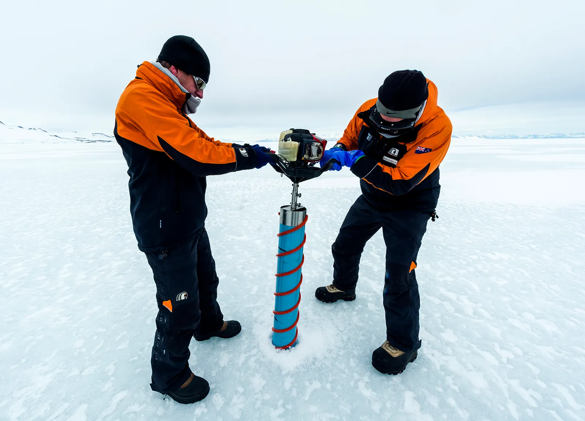

Glaciers, vast accumulations of ice formed over centuries, serve as both sculptors of the Earth's surface and archives of climatic history. As glaciers advance, they erode underlying rock through processes such as abrasion and plucking, carving distinctive U-shaped valleys and transporting sediment across considerable distances. When they retreat, they leave behind depositional features, including moraines and outwash plains, which provide insight into past glacial activity.
Beyond their geomorphological impact, glaciers preserve invaluable records of atmospheric conditions. Ice cores extracted from glaciers contain layers of compacted snow, each corresponding to a specific period. These layers trap air bubbles, particulate matter, and isotopic signatures that allow scientists to reconstruct historical temperature fluctuations, volcanic activity, and even anthropogenic pollution levels. These records make glaciers key archives for understanding past environmental conditions.
However, the accelerated melting of glaciers due to rising global temperatures threatens both their physical presence and the data they contain. As ice layers degrade, the integrity of these climatic records is compromised, limiting the extent to which scientists can accurately interpret past environmental conditions. Consequently, glaciers are not only indicators of climate change but also irreplaceable repositories of Earth's environmental history.
